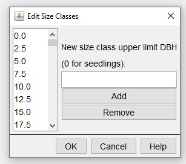
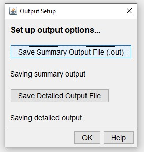
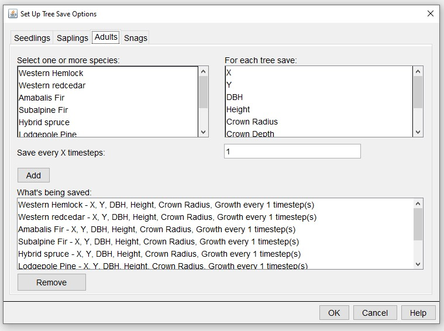
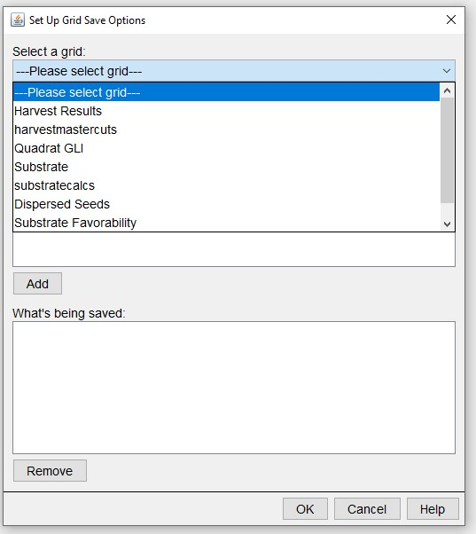

Preparing inputs for rsortie
January 2022
prepare_inputs.RmdThis vignettes describes the files required to run rsortie for SORTIE parameter file editing and creating new files.
Files to prepare:
- Base SORTIE parameter file
- list of files to update
- values to substitute those in the base parameter file and/or
- .xml chunks to substitute with those in the base parameter file.
Base SORTIE parameter file (xml)
To set up a base parameter file and run SORTIE, you must already have access to a parameter file - SORTIE comes with an example parameter file called GMF.xml that can be used to learn.
Behaviours
rsortie interacts with SORTIE parameter files. These are .xmls that contain the list of variables within behaviours defined in the SORTIE GUI. rsortie cannot interact with or change elements that do not exist already in the base xml file, so it is important to understand the GUI to select all the behaviours required to run a SORTIE simulation. Importantly, if you intend to primarily use rsortie to assign values to variables within the selected behaviours, you must assign a non-zero value to those variables, or those lines do not get printed to the base xml.
All the behaviours, including harvests or plantings, that you want to interact with in rsortie must be contained within the base file.
This is related to how the .xml is saved from SORTIE (only behaviours selected are included in the xml), and each behaviour is assigned a list position. If you add or remove a behaviour in the SORTIE GUI, these list positions will be automatically updated in the resulting xml, but we don’t yet have that capability to adjust behaviour list positions in rsortie, and it may not be possible. Any of the behaviours can be populated with dummy variables (1s) and harvest or planting areas (just select some cells in the harvest and planting interfaces), as these can all be substituted in an rsortie run. As long as they exist in the base xml file, often with a non-zero value required, all variables within behaviours can be changed in rsortie.
Tree population
The base SORTIE parameter file must contain the species, and diameter size classes required to set up an initial tree population. These changes must be done in the SORTIE GUI using Edit > Tree Population > Edit species list, and/or Edit initial density size classes:
 You can use rsortie to remove an entire species from a base SORTIE parameter file, but you cannot add a species in rsortie. So again, set up the base file to contain all the species that might be used in a run.
A common mistake is to leave 0s in all the tree species-diameter size classes for the initial stand conditions, but 0s will result in that species-diameter class will not be available in the actual saved base parameter file xml. Populate each of these with a 1 in the base parameter file, and then they will be available for substitution by zeros or non-zeros using makeFiles in rsortie.
Output Setup
We typically select the options required for outputs in the base SORTIE parameter file in the SORTIE GUI. Select outputs from the edit menu:
 Select the information that will be added as columns from each tree:
 And which grids to track:
 For more information on these output options and the behaviours that create them, please visit http://sortie-nd.org/help/manuals/index.html.
To edit a SORTIE xml file, you must provide the tool with a set of information about the base file, the parameters or code that you are changing, and information about how to combine the input to make different files.
There are a minimum of four files that must be present to run the model.
- Files.txt: this file contains the list of files that you wish to use.
There are six different slots allowed in this file, with a minimum of two types required.
| Type | Description | Required |
|---|---|---|
| 0 | Base xml file | Yes |
| 1 | Parameter value file | Yes |
| 2-5 | Parameter value file | No |
The Base xml file is the input xml file that contains the necessary parameters, behaviours, and structures. This file must contain all possible examples of variables and behaviours that will be modified in other files.
There can be more than one of any of the file types. Details about the formats of the files are below.
The code will loop through all combinations of the all the files.
The resulting xml files will be named with a combination of each of the names present: type0-type1-type2.xml.
Example:
type, name
0, Test.xml
1, t1.csv
2, f2.xml
2, g2.csv
3, p3.csv
3, r3.csv
The resulting output files will be named: test-t1-f2-p3.xml, test-t1-f2-r3.xml, test-t1-g2-p3.xml, test-t1-g2-r3.xml.
- VariableNames.csv: This a translation file that matches the parameter names in the input file with those in the xml file, and tells general format of the variable. Formats are described more later. This file will only be changed to add new variables or to change the parameter name of a variable.
File format: Parameter name, variable type, xml variable name, group name (if applicable)
All variable names are completely case and space sensitive; the code is looking for exact matches. For example, use Timesteps not TimeSteps or timesteps or Time steps.
The parameter names in the parameter value file can be specific to a user, but must be the same for all the parameter value files listed in the Files.txt.
Base Xml file: (type 0) This file should be a standard SORTIE input parameter file, with no modifications required. It is very important that this file contains all variables and sections that will be modified. For example, if you might be adding xml code with new harvest rules, a harvest section must be in the original SORTIE file. Similarly, if you are changing initial densities, then each size class that you might want to use should be in the original file.
Parameter value files:
There are two types of parameter value files: csv and xml, both of which are further described below.
In all cases, variables are updated in the xml file in the order that they are in the parameter value file, and in the order of the slot of parameter value files. Parameter value files are read from top to bottom, and file slots are addressed from 1 to 3. So, a variable that is in slot 3 will supersede one that is in a slot 1 file. This could be useful if you wish, for example, to replace an xml section (e.g. as a slot 2 file), but then change one of its parameters (e.g., in a slot 3 file).
-
4.1 CSV files These files contain a set of new values for different parameters.
- The first line must be a blank column and then the species names as in the xml file. As with variable names it is critical that the species names are exactly the same as they are in the xml file and the code searches for an exact match.
- The second line must either be “na” or the name of BehaviourList to which the parameters following it apply. The BehavoiurList name comes from the original xml file, so requires knowledge of the xml file and its naming. However, it is necessary to give the list name because there could be multiple behavior lists with the same set of parameter names.
- When the parameters for the behavior list is finished, you need to mark the start of a new section with either a new BehaviourList or “na”.
- If the parameter is by species, the code looks for a parameter in the corresponding column. If the parameter is not species specific (e.g. timestep), then only the first column is used. Values can be in the other columns, they will just be ignored.
- The code will create output file names for each new xml file. The Parameter value file should include the directory into which the output should be placed. The format must include a final “” and will look something like:
Output,C:\Projects\SORTIE\test\
ShortOutput,C:\Projects\SORTIE\test\
The file name will be a combination of the original xml filename and the parameter value file name, and will be the same filename used for the final xml file. Note that the file extension on the Output file will be _det.gz.tar and on the ShortOutput fill be .out.
If these variables are not present in an xml file or csv file, and you are creating multiple files, you will run the risk of overwriting your output when you run SORTIE.
- The first line must be a blank column and then the species names as in the xml file. As with variable names it is critical that the species names are exactly the same as they are in the xml file and the code searches for an exact match.
-
4.2 XML files The second type of parameter value file allows for the replacement or deletion of xml code. The tool will replace the existing lines of text with the new lines of text from the file or delete a section of code. The file must contain complete xml format code.
-
New behavior: The file can contain a completely new set of behaviours or parameters, such as allometry or GapDispersal21. The tool will look at the first line of the file, determine what to look for, and replace all the lines between the beginning and end of the section with the new code. For example, you could use this to completely replace the allometry section of the input file.
-
Delete an xml section: Put the name of the section that you wish to delete in the first line of the xml file (e.g. StochasticMortality9). The second line of the file must contain -999. The tool will then find the section that corresponds to what is in the first line of the file, and then remove it entirely from the final xml file. For example:
<StochasticMortality9>
<delete>-999</delete>
</StochasticMortality9>
The tool will search through the xml file replacing one section at a time, in order. Any number of xml sections can be present in this file, and the file can include both sections to delete or sections to replace.
-
New behavior: The file can contain a completely new set of behaviours or parameters, such as allometry or GapDispersal21. The tool will look at the first line of the file, determine what to look for, and replace all the lines between the beginning and end of the section with the new code. For example, you could use this to completely replace the allometry section of the input file.